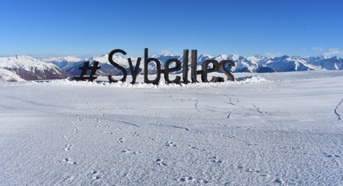

NOUVEAUX EQUIPEMENTS
Nouveau télésiège débrayable 6 places « Gaston Express » - Secteur Ouillon
Venant remplacer le téléski double « Torret » (n°26 et 18 sur le plan des pistes), cette nouvelle remontée mécanique a pour objectif de faciliter l’accès à la zone de l’Ouillon – cœur animé du domaine skiable en moins de 5mn et ainsi de fluidifier les liaisons inter stations. D’un débit de 2400 skieurs/heure, il représente un investissement de 4,6 M d’€. Ce télésiège a été nommé en mémoire à Gaston Maulin, père fondateur du domaine skiable des Sybelles, qui en 1998 a lancé le projet pour la liaison des 6 stations autour du massif de l’Ouillon. Gaston Maulin : Personnalité emblématique et forte du milieu de la montagne, sa plus belle réussite aura été d’offrir une activité de loisir accessible à un plus grand nombre : le ski. Une aventure qu’il débuta en 1995 en acquérant les concessions des remontées mécaniques du Corbier, de Saint-Jean-d’Arves et de Saint-Colomban-des-Villards. Puis en 1998, il rachète avec la SOREMET (exploitant du domaine skiable de La Toussuire) dirigée par Jean-Louis Coynel, les remontées mécaniques de Saint-Sorlin-d’Arves. Promotion immobilier et négociateur hors pair, la société Maulin Montagne Participations, renommée Maulin.ski, est créée en 2005. Son fils – Alexandre – reprend la suite et est désormais dirigeant de la société. Gaston Maulin s’est éteint en février 2019.


SÉCURISATION DE LA LIAISON TOUSSUIRE-CORBIER
Afin d’assurer une skiabilité optimale et la liaison entre les stations de La Toussuire et du Corbier, de nouveaux équipements de neige de culture sont installés sur le bas de la piste rouge Renard – secteur La Toussuire.

WEBCAM 360° A L'OUILLON
Véritable rond-point central et cœur animé du domaine skiable des Sybelles, le secteur de l’Ouillon situé à 2400 m d’altitude se voit doté d’une webcam 360° avec vue sur les liaisons, la chaine de Belledonne et le Mont Blanc.
